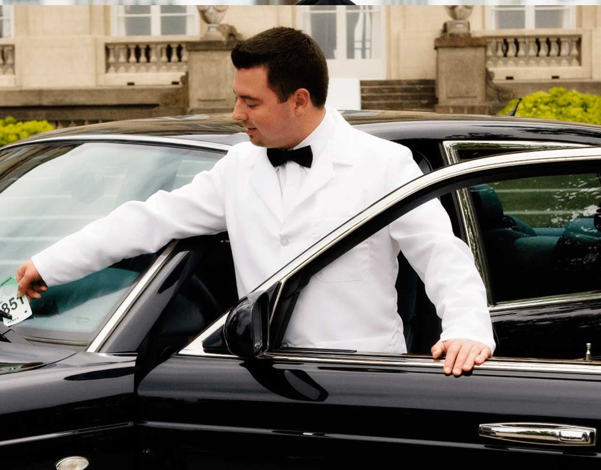

En el Gran Casino ASIR queremos que tu experiencia sea excepcional desde el momento en que llegas
Por eso contamos con un parking privado, amplio y vigilado, pensado para que disfrutes del casino con total comodidad y seguridad.
Además, ofrecemos un exclusivo servicio de aparcacoches para quienes buscan la máxima comodidad.
Los propietarios pueden solicitar que un miembro de nuestro equipo recoja su vehículo directamente en la entrada del casino, lo estacione en el parking y, al finalizar su visita, se lo entregue de nuevo en la puerta. Un servicio rápido, seguro y totalmente personalizado.
Nuestro aparcamiento incluye:
Acceso directo al casino, sin esperas ni complicaciones.
Vigilancia 24/7, garantizando la seguridad de tu vehículo.
Plazas amplias y bien iluminadas, aptas para todo tipo de coches.
Servicio de aparcacoches opcional, disponible durante todo el horario del casino.
Zonas especiales para turistas y visitantes, donde podrán fotografiar algunos vehículos seleccionados por su diseño, exclusividad o historia.
En el Gran Casino ASIR, la experiencia empieza mucho antes de entrar: empieza en el aparcamiento.
Contrataciones

Disfruta de la experiencia del Gran Casino ASIR desde el primer instante con nuestro exclusivo servicio de aparcacoches. Deja tu vehículo en la entrada y nuestro personal se encargará de llevarlo al parking privado y devolvértelo al finalizar tu visita.
Precio del servicio: 15€ por vehículo.
El Parking del Gran Casino ASIR también es un lugar para disfrutar. Hemos habilitado una zona especial para turistas y visitantes, donde podrán fotografiar algunos de los vehículos más llamativos del aparcamiento, seleccionados por su diseño, exclusividad o historia.
Acceso a la zona de fotos: 5€ por persona.